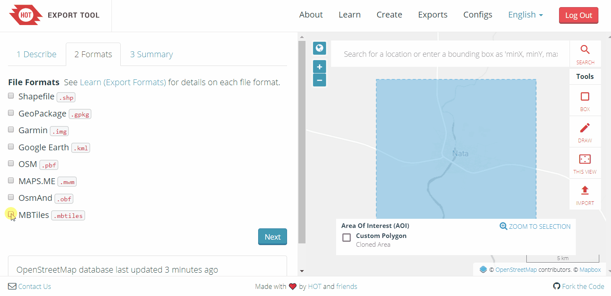
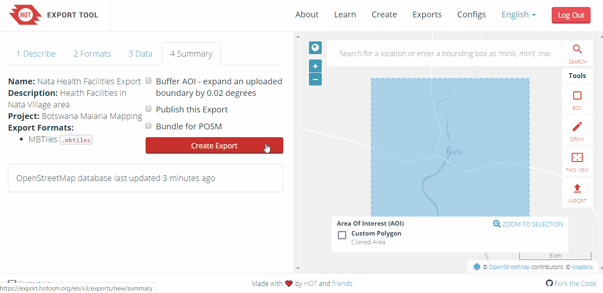
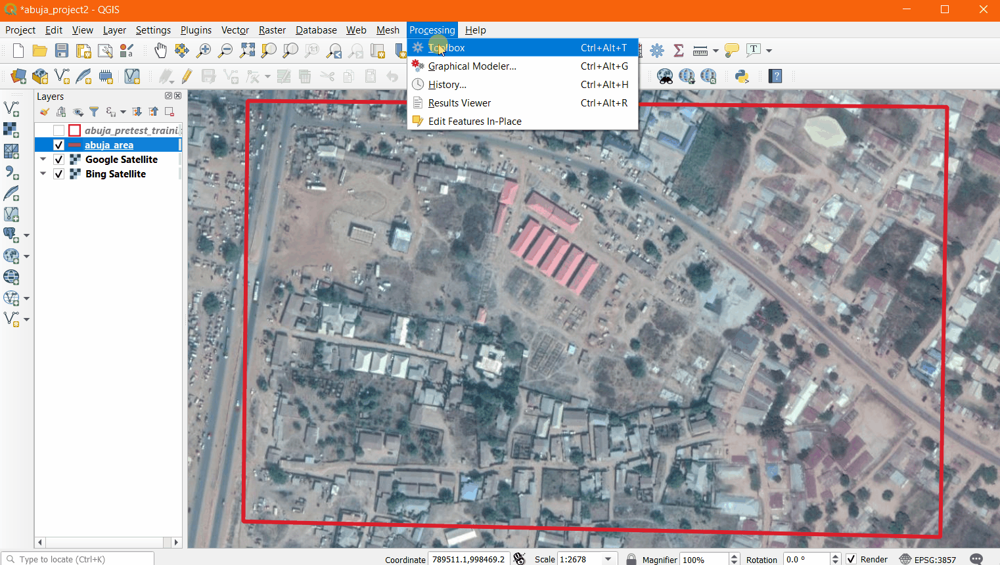
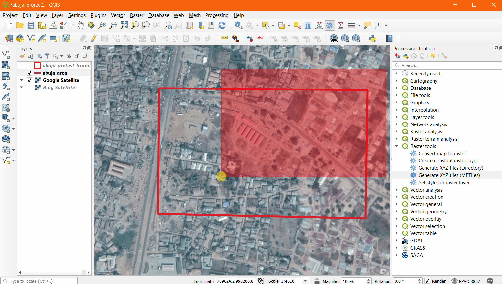
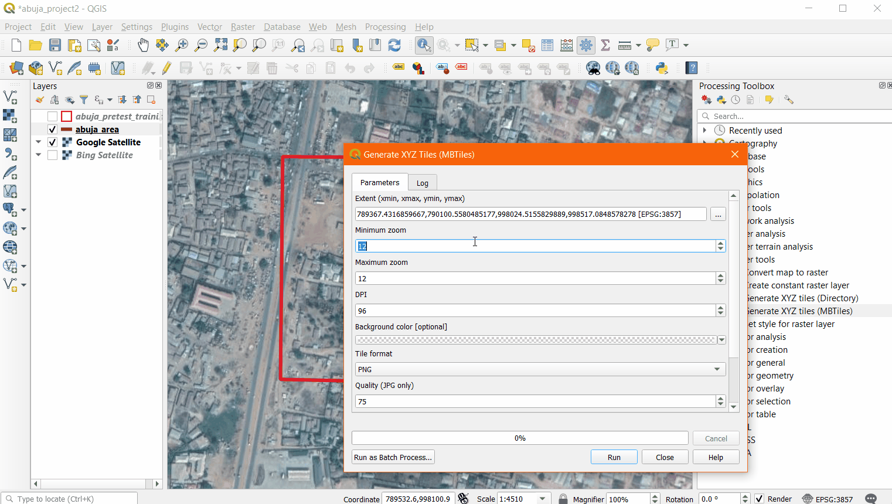
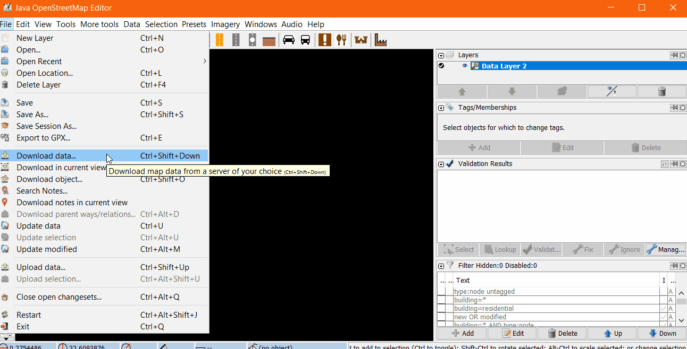
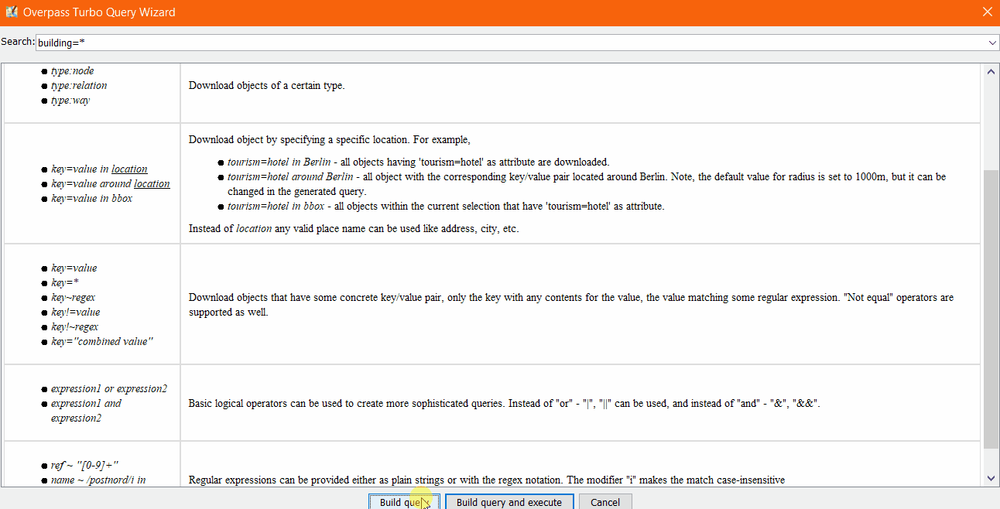
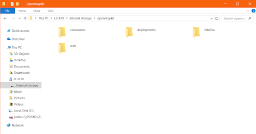

3.2.2 Setting up OpenMapKit
This section provides:
- An overview of steps needed to set-up OMK
- A step-by-step guide for creating OMK survey forms, including example files
- Guidance on selecting an MBTile creation method and step-by-step guide on creating MBTiles.
- A step-by-step guide for creating additional files necessary for running OMK.
- A step-by-step guide for setting up OMK on devices.
Overview
OpenMapKit (OMK) is an extension that launches directly from within OpenDataKit (ODK) Collect when the OpenStreetMap question type is enabled in a standard survey. It is what allows you to browse OSM features, and to create and edit OSM tags.

Not sure if OpenMapKit is right for your project? Review Data Collection Applications.
Resources and Training Materials
This section features a selection of resources targeted at project managers, trainers, or even self-learners on the topic(s) outlined above.
 The following section is designed to serve as a self-paced guides for project managers, supervisors, or others in setting up the application.
The following section is designed to serve as a self-paced guides for project managers, supervisors, or others in setting up the application.
Set-up Process To set-up OpenMapKit for devices, you will need to follow the following steps:
- Create OMK forms
- Create .mbtiles
- Create .osm layer
- Optional: Set-up constraint file
- Download and set up ODK and OMK applications
 The following section is designed to serve as a self-paced guides for project managers, supervisors, or others in setting up the application.
The following section is designed to serve as a self-paced guides for project managers, supervisors, or others in setting up the application.
Creating OMK Forms
When using OMK survey applications, you will need to create the files that will serve as the survey forms.
Forms for OMK are slightly altered from ODK forms to incorporate the OSM tagging scheme and need to be built using spreadsheet software (such as Excel or LibreCalc). In addition to the structure of an ODK form, OMK forms require an additional ‘osm’ tab that alters the form structure for OMK. Documentation on how to design a form can be found here.
Form conversion After forms are developed, they need to be converted from .xlsx/.xls to .xml to be used by the ODK application. This can be done by using XLSform online or offline. If using OpenMapKit server, you will not need to complete form conversion. The server will complete this process for you.
Create .mbtiles
MBTiles (.mbtiles) is the file format used for storing map tiles as a single file - the most common use case as baselayers for mobile mapping applications. There are multiple tools to create mbtiles, with selection based on baselayer type (aerial imagery), addition of vector layers, file size, zoom, etc. Many factors can influence the type of basemap that you need for your field data collection.
- If you are mapping buildings in areas that are rural and/or there are few landmarks in OSM, use an aerial imagery basemap mbtile.
- If you are working with mappers or surveyors with low map literacy, aerial imagery basemap mbtiles could reduce issues.
- If you are mapping points (such as POI) and/or working in well-mapped areas, simply using OSM basemap mbtiles would be feasible.
- If your mapping area is being divided into assignment areas or enumeration areas to divide among surveyors, consider adding vector layers to your mbtile for mappers work from.
| I need .mbtiles with… | HOT Export Tool | QGIS | Tile Huria |
|---|---|---|---|
| Aerial Imagery Basemap | X | ✔ | ✔ |
| OSM Basemap | ✔ | ✔ | ✔ |
| Vector Layers (i.e. enumeration areas) | X | ✔ | X |
Resources
- OSM Wiki: https://wiki.openstreetmap.org/wiki/MBTiles
- Mapbox: https://docs.mapbox.com/help/glossary/mbtiles/
a) Create an MBTile with HOT Export Tool
HOT Export Tool allows users to download OSM data by specifying tags, area of interest, and file type. Learning resources and walkthroughs can be found at the HOT Export Tool Learn page.
Skill level: Easy
Tools and Technology Needed:
- Computer
- Internet Connection
- OSM Account
To get started, open an internet browser and go to: https://export.hotosm.org/ To use the HOT Export Tool, you will need to log in using your OSM username and password, by clicking the red “Log In” button in the top right-hand corner.

Select ‘Create’ in the top menu.

Select an AOI on the map by searching a place, uploading a .geojson, or drawing an area in the map to the right. To draw an area of interest, zoom in and find a location of your choice (i.e. Zwedru, Accra). Once you have zoomed in to your area of interest, select the box tool from the Tools Menu on the right. Click one corner to start drawing a box, then select the opposite corner to complete the box. This is your AREA OF INTEREST that will be downloaded.

On the left hand side of the window, fill out the “1 Describe” options:
- Name: “[YOUR OSM USERNAME] Test Export”
- For example, “jessbeutler Test Export”
- Description (optional)
- Project (optional)
- For example, “Government Inclusion Project”

Select preferred file type in the ‘Formats’ tab. Select .mbtiles.

In the ‘Data’ tab, select the ‘OpenStreetMap’ as the source. Then select the zoom range. The higher the zoom range, the more you will be able to zoom in on the basemap. Note, higher zoom ranges increase the size of files.

In the ‘Summary’ tab, select ‘Create Export’. While processing, a “Running” status will show. Processing time depends on export size. Once completed, the file will be available for download & sent to your email.

This process will take several minutes to process.
When the export process is completed, the ‘Status’ bar will be updated to ‘COMPLETED’. Download the file by clicking on the file link, as highlighted below.
b) Create an MBTile in QGIS
Skills and technology needed
- Computer
- Internet access (for web service basemaps only)
- QGIS (and Basic skills in QGIS)
- Optional:
- Vector layers
- QuickMapServices plug-in
Recommendation: When running this process for the first time, we recommend creating an MBTile for a small area (<1 sq km) to test processing times.
To create an MBTile in QGIS using this process, you will need to have version 3.8 or higher installed. The following instructions were developed using QGIS version 3.10.
Open a QGIS project. Add (and style) all layers required for your MBTile basemap. These layers can include:
- Vector layers for enumeration areas, or other guidance.
- Raster layers, such as aerial imagery or an OSM basemap. Web service basemaps can be accessed via the QuickMapServices plugin.
Once all layers are selected and styled, navigate to the ‘Processes’ menu and open ‘Toolbox’.

In the ‘Toolbox’ panel on the right-hand side, open the ‘Raster Tools’ sub-menu. Select ‘Generate XYZ tiles (MBTiles)’.

In this pop-up window, you will need to set the specifications for your MBTile. Click on the ‘…’ button under ‘Extent’ to select the extent of the MBTile. You can either select the extent of the map canvas or draw a bounding box.


Next, you will need to select the minimum and maximum zoom. This selection will depend on the needs of your MBTile and may require trial and error to assess the best combination. For use with OpenMapKit, we recommend a minimum zoom of 18. Note: the larger the range and the higher the zoom levels, the longer it will take for the MBTile to process (and will create a larger file.)

The remaining specifications can be adjusted as needed. Hover over each of these options to see default, minimum, and maximum options.
Once all settings are selected, click ‘Run’ to process the MBTile.
Note: this process may take several minutes depending on the zoom range and size of the MBTile as well as the processing power of your computer.
c) Create an MBTile in Tile Huria
Tile Huria is a simple tool for creating mbtiles based on an area provided via Geojson format with aerial imagery.
Skill level: Easy
Tools and Technology Needed:
- Computer
- Internet Connection
- .geojson file for area of interest
Create an .osm layer
To conduct data collection using OpenMapKit (OMK), you will need to create an .osm layer. This .osm layer provides the buildings for selection in the OMK application.
Skills and Technology Needed
- Computer
- Internet Connection
- JOSM Installed
- Basic JOSM skills
In JOSM, click the top-menu File > New Layer to start. Then click the top-menu File > Download Data.

In the ‘Download’ window, click the tab ‘Download from Overpass API’. This will allow you to download data with specific key=value tags in an area of interest. The top of this tab provides space for a query to be entered. Click ‘Query Wizard.’

For an OMK .osm layer, we want a layer with only building polygons. In the search bar, type “building=*”. This will return an OSM feature with a building tag. Click ‘Build query’.

In the slippy map below the Overpass query, navigate to your area of interest in OSM. Drag the map by holding down the right-click button and dragging your mouse. To zoom, use the ‘+’/’-’ keys on your keyboard. Once navigated to your AOI, hold down the left-button of your mouse or navigation pad and drag your mouse to create a pink box. This pink box is your bounding box, all buildings within this area will be downloaded. When complete, click ‘Download’.

Right click on the layer file in the ‘Layers’ window. Click ‘Save as’. The default file type is OSM Server Files (*.osm), this is the correct file type.

Once saved, this file can be uploaded to devices for data collection with OMK.
Optional: Set-up a constraint file
Constraint files manage the logic of a form - when to skip questions, etc. OpenMapKit comes with a pre-built constrain file. For information on how to modify a constraint file, see
Download and set up the OMK application
Note: You will need ODK to run OMK. We advise installing ODK first to allow for proper set-up and testing.
Download application
The OMK application can be found on Google Play: https://play.google.com/store/apps/details?id=org.redcross.openmapkit&hl=en_US
If installing on multiple devices with low internet resources, it is recommended to download and share the apk offline. The APK file for OpenMapKit can be downloaded here.
Setting up application on devices
- After downloading the OMK app, a openmapkit folder will be automatically created in on the internal memory of the device. Connect your device to a laptop to confirm that this folder is created. If you don’t see this folder on your device’s internal storage, Restart the device.
- Once the device has been restarted, connect it to your laptop, and navigate to internal storage -> openmapkit folder. You will find for sub-folders inside the openmapkit folder. I.e ‘constraints’, ‘deployments’, ‘mbtiles’ and ‘osm’ folders.

- If you have a customized constraints file, in the constraints folder, delete the Buildings.json and default.json files. Add your custom the default.json file to the constraints folder.
- Add your .mbtiles file to the mbtiles folder.
- Add your .osm file to the osm folder.
- Now you are set to start working with OMK. Exit the file manager window.